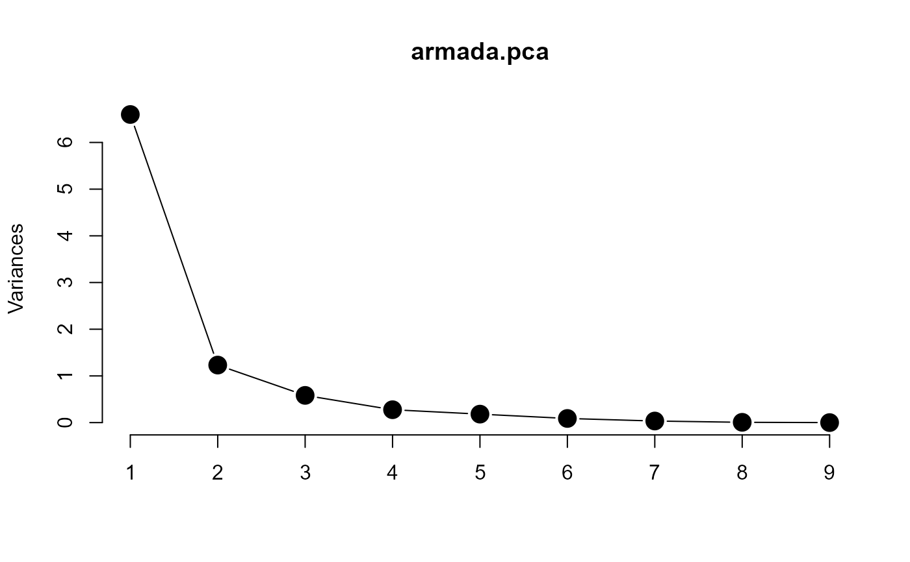
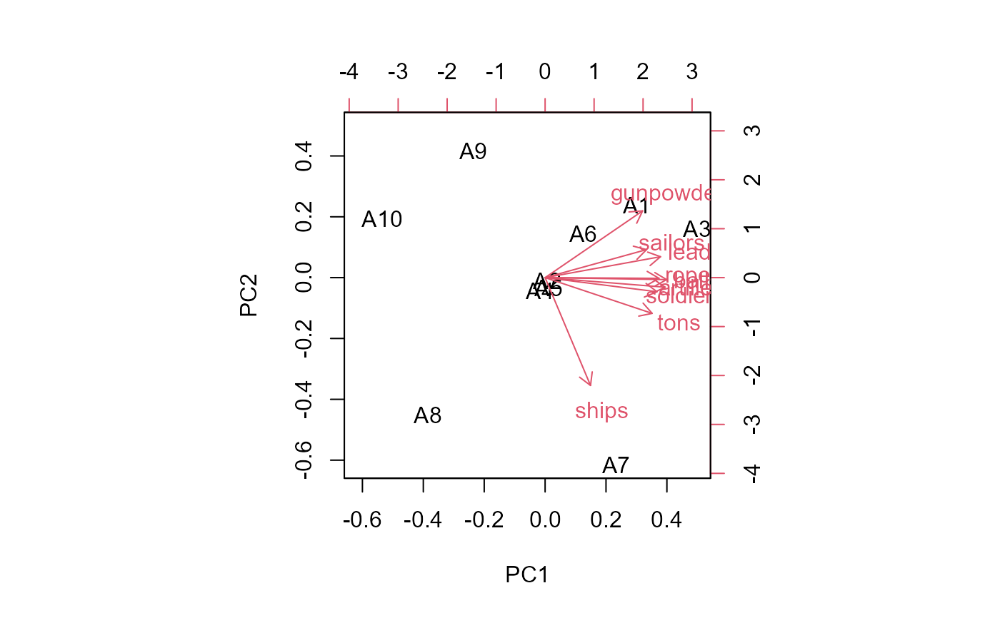

The Spanish Armada (Spanish: Grande y Felicisima Armada, literally "Great and Most Fortunate Navy") was a Spanish fleet of 130 ships that sailed from La Coruna in August 1588. During its preparation, several accounts of its formidable strength were circulated to reassure allied powers of Spain or to intimidate its enemies. One such account was given by Paz Salas et Alvarez (1588). The intent was bring the forces of Spain to invade England, overthrow Queen Elizabeth I, and re-establish Spanish control of the Netherlands. However the Armada was not as fortunate as hoped: it was all destroyed in one week's fighting.
de Falguerolles (2008) reports the table given here as Armada as an
early example of data to which multivariate methods might be applied.
Format
A data frame with 10 observations on the following 11 variables.
Fleetdesignation of the origin of the fleet, a factor with levels
Andalucia,Castilla,Galeras,Guipuscua,Napoles,Pataches,Portugal,Uantiscas,Vizca,Vrcasshipsnumber of ships, a numeric vector
tonstotal tons of the ships, a numeric vector
soldiersnumber of soldiers, a numeric vector
sailorsnumber of sailors, a numeric vector
mentotal of soldiers plus sailors, a numeric vector
artillerynumber of canons, a numeric vector
ballsnumber of canonballs, a numeric vector
gunpowderamount of gunpowder loaded, a numeric vector
leada numeric vector
ropea numeric vector
Source
de Falguerolles, A. (2008). L'analyse des donnees; before and around. Journal Electronique d'Histoire des Probabilites et de la Statistique, 4 (2), Link: https://www.jehps.net/Decembre2008/Falguerolles.pdf
Details
Note that men = soldiers + sailors, so this variable is redundant in
a multivariate analysis.
A complete list of the ships of the Spanish Armada, their types, armaments and fate can be found at https://en.wikipedia.org/wiki/List_of_ships_of_the_Spanish_Armada. An enterprising data historian might attempt to square the data given there with this table.
The fleet of Portugal, under the command of Alonso Pérez de Guzmán, 7th Duke of Medina Sidonia was largely in control of the attempted invasion of England.
References
Pedro de Paz Salas and Antonio Alvares. La felicisima armada que elrey Don Felipe nuestro Senor mando juntar enel puerto de la ciudad de Lisboa enel Reyno de Portugal. Lisbon, 1588.
Examples
data(Armada)
# delete character and redundant variable
armada <- Armada[,-c(1,6)]
# use fleet as labels
fleet <- Armada[, 1]
# do a PCA of the standardized data
armada.pca <- prcomp(armada, scale.=TRUE)
summary(armada.pca)
#> Importance of components:
#> PC1 PC2 PC3 PC4 PC5 PC6 PC7
#> Standard deviation 2.5688 1.1100 0.76352 0.52515 0.42582 0.29774 0.18390
#> Proportion of Variance 0.7332 0.1369 0.06477 0.03064 0.02015 0.00985 0.00376
#> Cumulative Proportion 0.7332 0.8701 0.93486 0.96551 0.98565 0.99550 0.99926
#> PC8 PC9
#> Standard deviation 0.0794 0.01885
#> Proportion of Variance 0.0007 0.00004
#> Cumulative Proportion 1.0000 1.00000
# screeplot
plot(armada.pca, type="lines", pch=16, cex=2)

biplot(armada.pca, xlabs = fleet,
xlab = "PC1 (Fleet size)",
ylab = "PC2 (Fleet configuration)")
